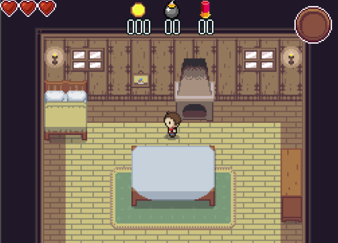

Projects
Explore my completed work and what's in progress.
Currently working on

Zelda Imitation Game
Top-down ARPG made in Godot, inspired by Zelda. No demo yet—just practice and learning how it works.
Godot
OSS
Explore my completed work and what's in progress.

Top-down ARPG made in Godot, inspired by Zelda. No demo yet—just practice and learning how it works.